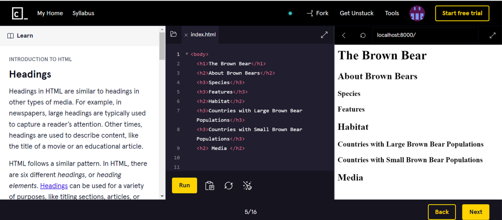
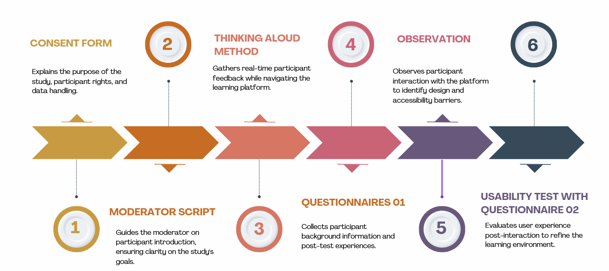
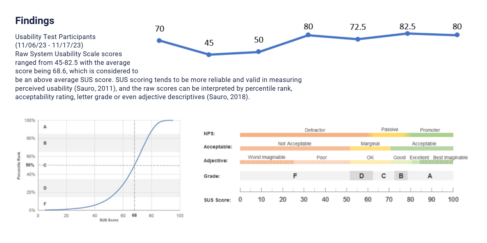

Enhancing HTML Learning for English Language Learners
EDUC 504: Evaluating Technology-based Learning Environments
I worked on this project as a student on a team of four from different backgrounds. We spent roughly two months.
Our project aimed to evaluate the user experience and learning outcomes of this popular online course, with a particular emphasis on how it serves the needs of learners whose first language is not English. We believe that understanding and enhancing the learning experience for this demographic is crucial in our increasingly digital and globalized world. My role on our team was to evaluate the accessibility concerns of the site and to ensure that the learner tryout process was accessible to EL Learners, which is the population we chose for our Usability Study.
One of the obstacles I faced was finding resources that could be used to evaluate the accessibility of the website effectively. I found it difficult to evaluate the website itself effectively, and although I thought of using the resource, I had found in the North Carolina Digital Learning Initiative but after discussing the issue with my teammates, we decided to collaborate on the design and accessibility portions to share resources we found and evaluate them together. This is how I learned about the A11Y Checklist from The A11Y Project and the WCAG (WAI) and Emily shared information about the SUS Scale. This way, we were able to compile a list of potential gaps on the website when it came to accessibility and came up with a detailed plan for the user testing portion of the activity.
In terms of my professional growth, I’ve become much more inquisitive regarding the functioning and selection of digital learning environments for students in K-12 education, especially students in Special Education programs. For example, when encountering a new STEM-related Digital Learning Environment, I now consider cost-effectiveness and privacy into my evaluation. By refining the skills that I would need to evaluate and test out these materials with students in K-12 programs, I can find tools that provide students with the representation they need and deserve.
As someone with experience primarily in disability, this project taught me a lot about the challenges and obstacles that EL Learners experience when using Digital Learning Environments, especially to learn programming. Through this project, I have learned a lot about the resources needed to evaluate whether these learning environments are accessible to EL Learners, and even though this does not fall in my specialization of disability, it does fall in my interest of accessibility, which means that I will be incorporating these tools in future evaluations I perform.
